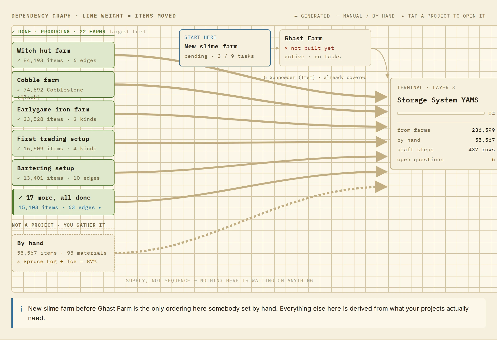
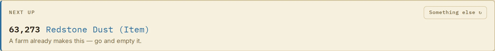
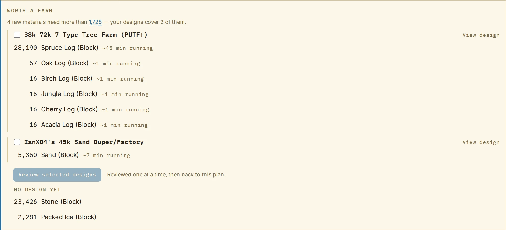
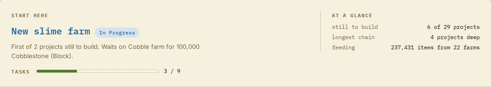
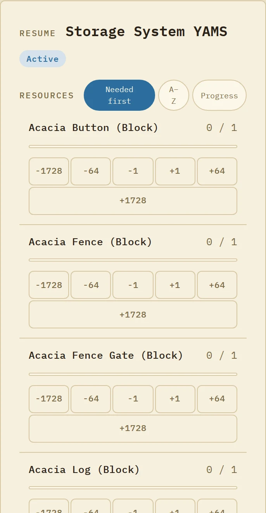

Seam reads the game's own recipes, drops and trades, adds up what every build in your world needs, and tells you what to do first.
Free to use. Sign in with a Microsoft account, nothing to install.

Why it exists
After the first few farms, every new build depends on three others, and the quantities stop fitting in your head. You forget that the iron farm needs iron to get started, or that the storage system wants sixty thousand redstone before the sorters even exist.
Seam holds the whole world at once. Every project lists what it needs; Seam works out how to get it from Minecraft's actual recipes, loot tables and villager trades for your version, then adds it all up across projects.
There is no AI in the planner. Every quantity, source and ordering comes from the game's data files and a fixed cost model, so the same world gives the same plan every time, and any number on the page can be traced back to a recipe, a drop or a trade.
What that looks like
Open a project and the first thing on the page is the one material worth going after now. If a farm you already built produces it, Seam says so instead of sending you to a mine.
Not in the mood for that one? Ask for something else.

Every raw material is priced against the farm designs in your idea bank. Twenty-eight thousand spruce logs is about 45 minutes of a tree farm running, or a long week by hand.
Seam lists the designs that would cover the gap, how long each needs to run, and which materials still have no design at all.

Which project to start, what it is waiting on, how deep the longest chain goes, and how much of the plan your finished farms already feed.
Dependencies come from the materials, not from a form. When a build needs something a planned farm will make, the farm becomes a prerequisite on its own.

Every project has a resource list with buttons sized for a thumb: plus one, a stack, a shulker box. Count while you empty the farm. The plan updates for everyone in the world.
The list is sorted by what is needed first, so the top row is always the right thing to be holding.

Seam Notebook · the mod
Seam Notebook is a Fabric mod for Minecraft 1.21.11. Press N in game and the notebook opens on the project you are working on: what is still needed, the tasks, and which chests you have tagged.
Sneak and right-click a chest to assign it to a project. Put the same jar on the server and it counts what is in the tagged chests, so the numbers in Seam match your storage room without anyone typing them in. A double chest counts once, and a shulker box inside a chest counts too.
The mod registers no blocks or items, so a player without it can still join a server that has it, and the other way around.